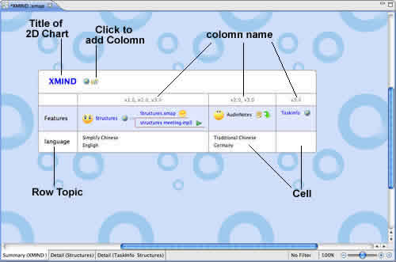

XMind allows users to easily insert factors and behaviors into spreadsheet, and include multiple topics - complete with individual appearances and structures - within each cell. A set of complex factors and behaviors that impact final measures are exhibited in perpendicular rows and columns. This enables the in-depth analysis of strengths and weaknesses, and provides a clear, easy-to-interpret view of different lines of thinking.
spreadsheet in XMind:

Here are basic operations in spreadsheet:
Column and Row:
Row topic is the main topic, and Column name is the label in mind map and other structures.
Two manners to Add Column:
- Click the button beside Title.
- Select a Row Topic, Click "Tab".
Two manners to Add Row:
- Select Title, and Click "Enter".
- Select a Row Topic, and Click "Enter".
Edit column, row topic:
- Column name: You can double click to edit Column txt, and change order via selecting column with mouse and moving left/right direclty.
- Row topic: You can double-click to edit it, and change the order via selecting Row Topic with mouse and moving up/down direclty.
Cell topic:
Cell topic has the same operations with topics in mind map and other structures.
Two manners to Add Cell topic with same level:
- Click "Enter" key after selecting a topic in this cell.
- Double click the blank in cell.
Cell topic struture:
- Select cell topic.
- Open properties view.
- Select structure in the drop-down structure list.
Note:
- Cell topics can be moved from on cell to another freely.
- You can add subtopic for any cell topic by clicking tab.
- You can add relationship, boundary in spreadsheet.
You may also be interested in...